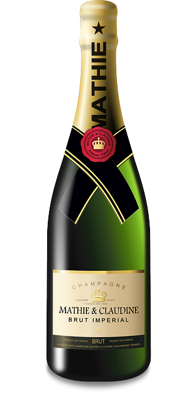

- 1
- 2
- 3

Portishead
Album Dummy
Year 1997
Discography Go Beat
- Mysterons – 5:06
- Sour Times – 4:14
- Strangers – 3:58
- It Could Be Sweet – 4:20
- Wandering Star – 4:56
- It's a Fire – 3:48
- Numb – 3:58
- Roads – 5:10
- Pedestal – 3:41
- Biscuit – 5:04
- Glory Box – 5:06
Dummy fue el álbum debut de la banda de trip hop Portishead, considerado clave dentro de este estilo musical, junto con otras bandas como Massive Attack o Tricky. Este nuevo género musical se conocería también como Bristol sound, debido a que la mayor influencia partía de grupos y sellos discográficos de la localidad inglesa de Bristol.